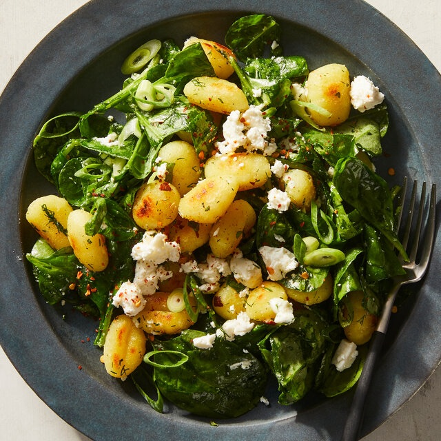

Crispy Gnocchi With Spinach and Feta
Courtesy of The New York Times

Ingredients
- 5 ounces baby spinach
- 6 ounces Greek feta, crumbled (about 1 cup)
- 1 lemon, halved
- 5tablespoons extra-virgin olive oil
- Salt and pepper
-
(16- to 17-ounce) package potato gnocchi (shelf-stable, fresh or frozen)
- ¼ to ½ teaspoon crushed red pepper
- 2 scallions, thinly sliced
- Big handful of chopped dill
- Big handful of chopped mint
Instructions
-
Place the spinach into a large bowl. Add half of the feta, juice of ½
lemon, 1 tablespoon of olive oil and a big pinch of salt; rub the
ingredients vigorously into the spinach to tenderize it. Leave to sit
and soften further while you cook the gnocchi.
-
Heat a large (about 12-inch) cast-iron or nonstick skillet over
medium-high; add 2 tablespoons of olive oil. Add the gnocchi to the pan,
breaking up any that are stuck together. Cook for 8 to 10 minutes,
tossing every 2 minutes, until golden and crispy all over. Allow to cool
in the pan for 5 minutes; they will further crisp as they cool.
-
Add the gnocchi to the spinach, along with the red pepper, scallions,
dill and mint. Drizzle with about 2 tablespoons of olive oil, add the
remaining crumbled feta and toss to combine. Squeeze the remaining lemon
juice over top and serve.
Home